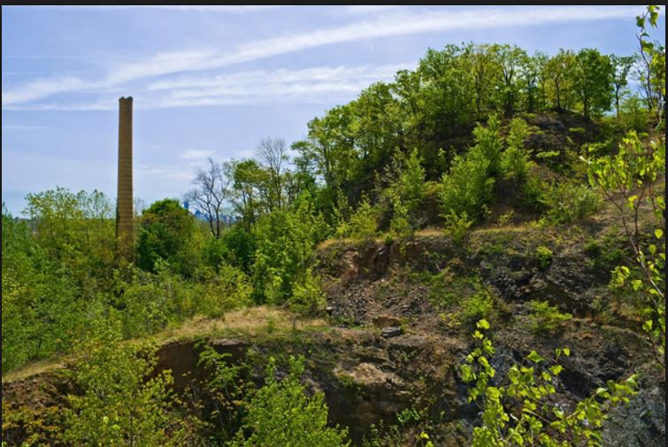
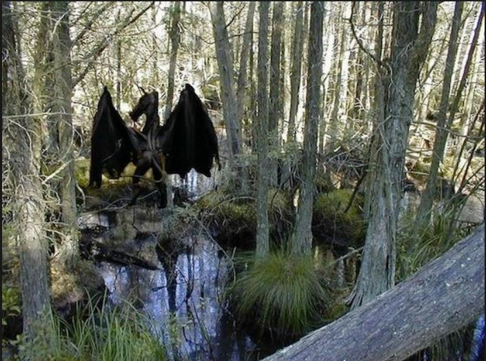
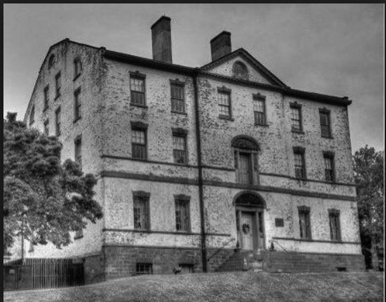
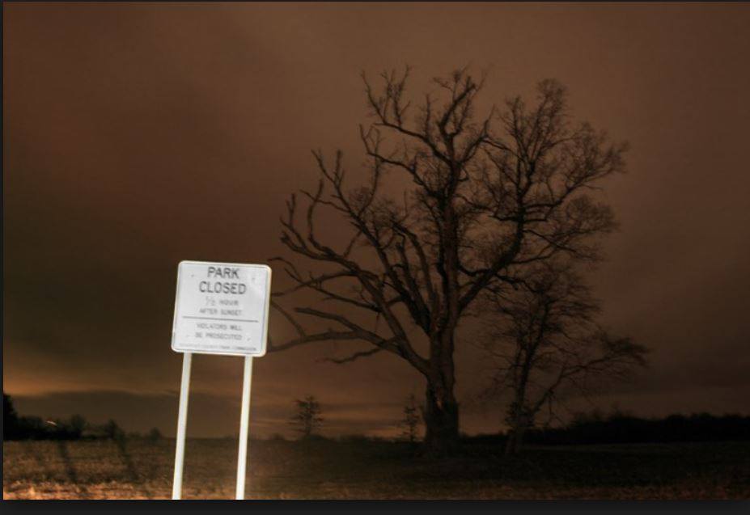
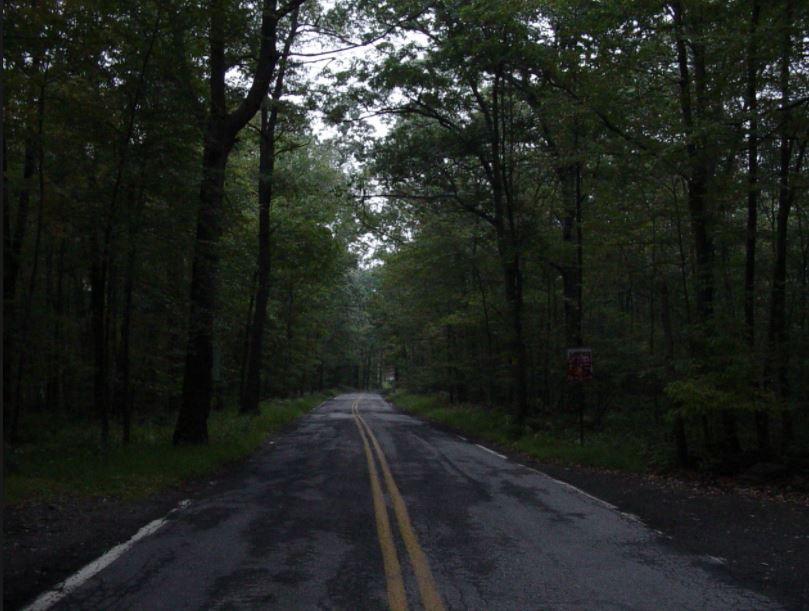

The Spooky List
1. Snake Hill – Secaucus, NJ

Description: Did you ever see the huge rock hanging over the Turnpike near Route 3? It used to be home to a psychiatric hospital and penitentiary, but was first a poor farm. Hundreds of ghosts are said to wander what used to be the grounds of these institutions. Address: Snake Hill
2. The Pine Barrens – South Jersey

Description: This vast area of land may look beautiful in the daytime. But at night, the deep woods and creepy noises scare off a lot of people. There are rumors that the Jersey Devil lives within, but no one knows for sure. Address: The Pine Barrens
3. Proprietary House – Perth Amboy, NJ

Description: This was the home of Benjamin Franklin’s son, William. He was the last royal governor of New Jersey in 1777. The house is said to be haunted by Revolutionary War soldiers and a woman who peers out the dining room window. Address: 149 Kearny Ave, Perth Amboy, NJ 08861
4. The Devil’s Tree – Bernards, NJ

Description: On Mountain Road, you’ll find a tree with several axe marks on it. Rumor has it that a local farmer murdered his wife and children, then hung himself from a tree. It continues that anyone who tries to cut down the tree, their life will end. Address: 181 Mountain Rd, Basking Ridge, NJ 07920
5. Clinton Road – West Milford, NJ

Description: Supposedly, a large white mansion resided here, but now it’s the home of a lot more than a mansion. According to Weird N.J., people have said that strange chants, writings, bodybags, and albinos have taken over the area. There has also been reports of random blue and white lights in the vicinity. Address: Clinton Road
Think our list is incomplete? Add to it yourself!
Copyright @ 2017 CS146A-Group5